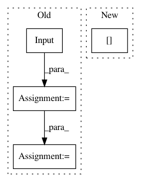

7ab8bc6a70982aa79c36c20678c98becb7f291b1,deepctr/models/dien.py,,DIEN,#Any#Any#Any#Any#Any#Any#Any#Any#Any#Any#Any#Any#Any#Any#Any#Any#,145
Before Change
features = build_input_features(dnn_feature_columns)
user_behavior_length = Input(shape=(1,), name="seq_length")
sparse_feature_columns = list(
filter(lambda x: isinstance(x, SparseFeat), dnn_feature_columns)) if dnn_feature_columns else []
dense_feature_columns = list(
filter(lambda x: isinstance(x, DenseFeat), dnn_feature_columns)) if dnn_feature_columns else []
varlen_sparse_feature_columns = list(
filter(lambda x: isinstance(x, VarLenSparseFeat), dnn_feature_columns)) if dnn_feature_columns else []
history_feature_columns = []
neg_history_feature_columns = []
sparse_varlen_feature_columns = []
history_fc_names = list(map(lambda x: "hist_" + x, history_feature_list))
neg_history_fc_names = list(map(lambda x: "neg_" + x, history_fc_names))
for fc in varlen_sparse_feature_columns:
feature_name = fc.name
if feature_name in history_fc_names:
history_feature_columns.append(fc)
elif feature_name in neg_history_fc_names:
neg_history_feature_columns.append(fc)
else:
sparse_varlen_feature_columns.append(fc)
inputs_list = list(features.values())
embedding_dict = create_embedding_matrix(dnn_feature_columns, l2_reg_embedding, seed, prefix="",
seq_mask_zero=False)
query_emb_list = embedding_lookup(embedding_dict, features, sparse_feature_columns,
return_feat_list=history_feature_list, to_list=True)
keys_emb_list = embedding_lookup(embedding_dict, features, history_feature_columns,
return_feat_list=history_fc_names, to_list=True)
dnn_input_emb_list = embedding_lookup(embedding_dict, features, sparse_feature_columns,
mask_feat_list=history_feature_list, to_list=True)
dense_value_list = get_dense_input(features, dense_feature_columns)
sequence_embed_dict = varlen_embedding_lookup(embedding_dict, features, sparse_varlen_feature_columns)
sequence_embed_list = get_varlen_pooling_list(sequence_embed_dict, features, sparse_varlen_feature_columns,
to_list=True)
dnn_input_emb_list += sequence_embed_list
keys_emb = concat_func(keys_emb_list)
deep_input_emb = concat_func(dnn_input_emb_list)
query_emb = concat_func(query_emb_list)
if use_negsampling:
neg_uiseq_embed_list = embedding_lookup(embedding_dict, features, neg_history_feature_columns,
neg_history_fc_names, to_list=True)
neg_concat_behavior = concat_func(neg_uiseq_embed_list)
else:
neg_concat_behavior = None
hist, aux_loss_1 = interest_evolution(keys_emb, query_emb, user_behavior_length, gru_type=gru_type,
use_neg=use_negsampling, neg_concat_behavior=neg_concat_behavior,
att_hidden_size=att_hidden_units,
att_activation=att_activation,
att_weight_normalization=att_weight_normalization, )
deep_input_emb = Concatenate()([deep_input_emb, hist])
deep_input_emb = tf.keras.layers.Flatten()(deep_input_emb)
dnn_input = combined_dnn_input([deep_input_emb], dense_value_list)
output = DNN(dnn_hidden_units, dnn_activation, l2_reg_dnn,
dnn_dropout, use_bn, seed)(dnn_input)
final_logit = Dense(1, use_bias=False)(output)
output = PredictionLayer(task)(final_logit)
// model_input_list = get_inputs_list(
// [sparse_input, dense_input, user_behavior_input])
model_input_list = inputs_list
// if use_negsampling:
// model_input_list += list(neg_user_behavior_input.values())
model_input_list += [user_behavior_length]
model = tf.keras.models.Model(inputs=model_input_list, outputs=output)
if use_negsampling:
After Change
features = build_input_features(dnn_feature_columns)
user_behavior_length = features["seq_length"]
sparse_feature_columns = list(
filter(lambda x: isinstance(x, SparseFeat), dnn_feature_columns)) if dnn_feature_columns else []
dense_feature_columns = list(
In pattern: SUPERPATTERN
Frequency: 3
Non-data size: 4
Instances
Project Name: shenweichen/DeepCTR
Commit Name: 7ab8bc6a70982aa79c36c20678c98becb7f291b1
Time: 2020-09-11
Author: wcshen1994@163.com
File Name: deepctr/models/dien.py
Class Name:
Method Name: DIEN
Project Name: keras-team/autokeras
Commit Name: 16474aee0c575e615c78d32f2a170c3d7f8f0082
Time: 2017-12-30
Author: jhfjhfj1@gmail.com
File Name: autokeras/graph.py
Class Name: Graph
Method Name: produce_model
Project Name: tensorlayer/tensorlayer
Commit Name: d3bdc5449964423387861c78edd9d890a81a5466
Time: 2019-03-31
Author: jingqing.zhang15@imperial.ac.uk
File Name: tests/layers/test_layers_recurrent.py
Class Name: Layer_RNN_Test
Method Name: setUpClass